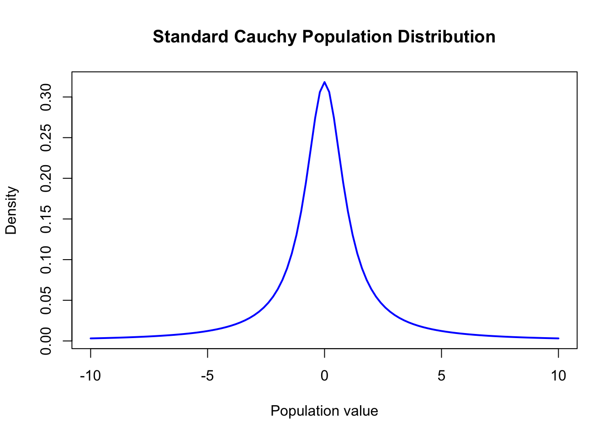
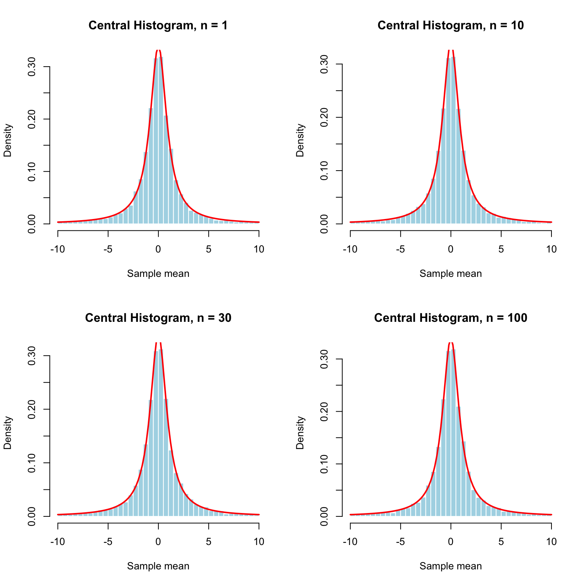
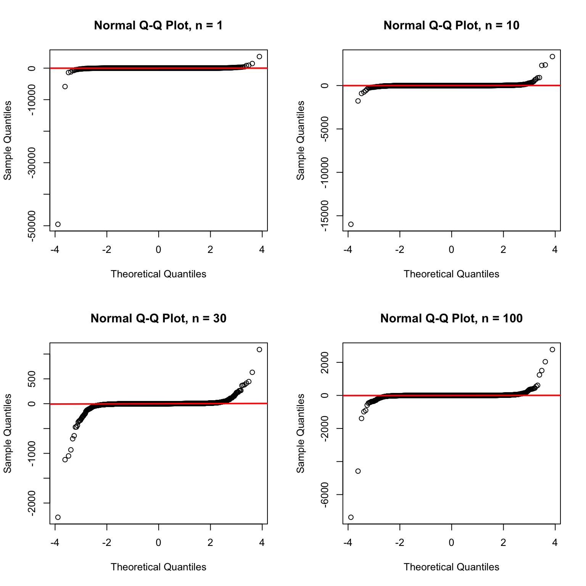
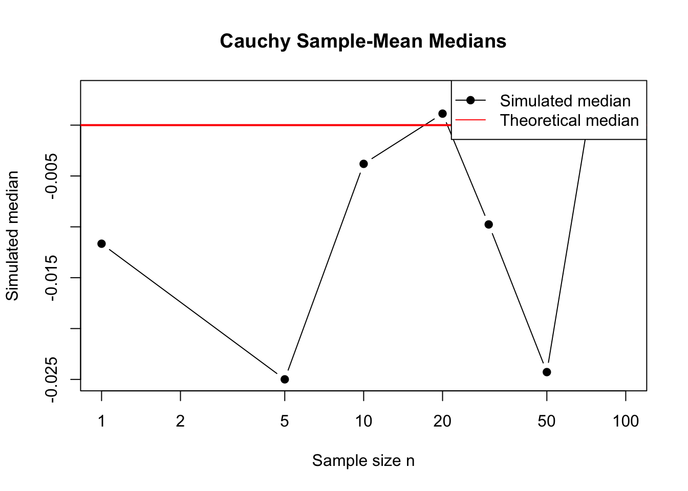
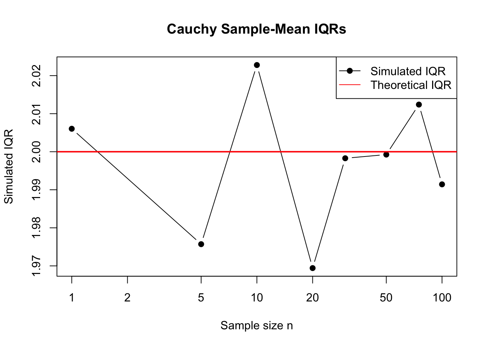
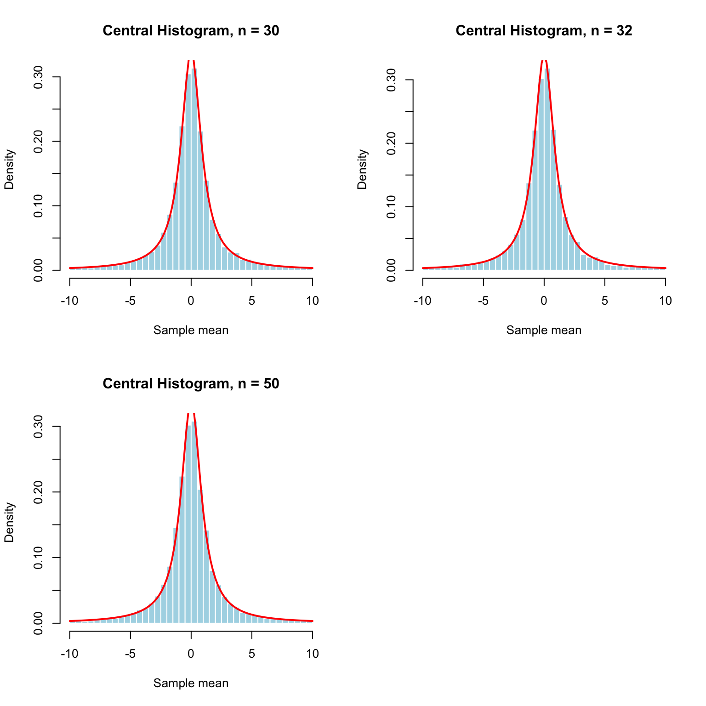
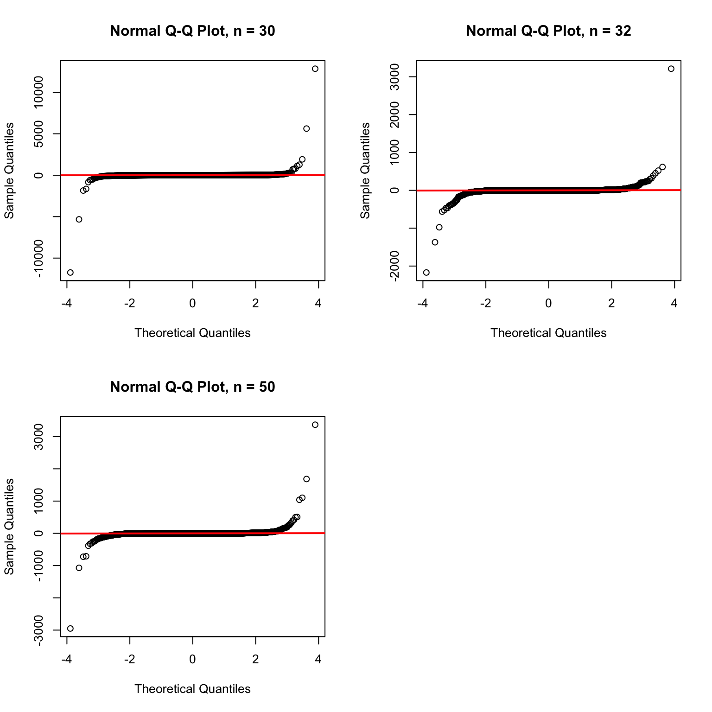

population_location <- 0
population_scale <- 1
population_mean <- NA
population_variance <- NA
population_sd <- NA
population_skewness <- NA
population_excess_kurtosis <- NA
population_median <- 0
population_iqr <- 2Cauchy Population
Theoretical Expectations
The population follows a standard Cauchy distribution:
\[ X \sim \operatorname{Cauchy}(0,1) \]
The Cauchy distribution has extremely heavy tails. Its theoretical mean, variance, standard deviation, skewness, and kurtosis are undefined.
Because the Cauchy population does not have a finite mean or variance, the ordinary Central Limit Theorem does not apply to its sample means. This means that increasing the sample size does not guarantee that the sampling distribution will become approximately normal.
The median of the standard Cauchy distribution is 0. Its first quartile is (-1), and its third quartile is (1), so its theoretical interquartile range is:
\[ \operatorname{IQR} = Q_3 - Q_1 = 1 - (-1) = 2. \]
Prediction for the Cauchy Population
The original Cauchy population is symmetric around zero, but it has extremely heavy tails. I do not expect the sampling distribution of the mean to become approximately normal as (n) increases.
The Cauchy distribution is an important exception to the Central Limit Theorem because it does not have a finite mean or variance. I expect the sample means to continue showing extreme values, large outliers, and heavy tails even for larger sample sizes.
Original Population Distribution
curve(
dcauchy(
x,
location = population_location,
scale = population_scale
),
from = -10,
to = 10,
col = "blue",
lwd = 2,
main = "Standard Cauchy Population Distribution",
xlab = "Population value",
ylab = "Density"
)
The Cauchy distribution is symmetric and centered at zero. However, it has much heavier tails than a normal distribution. This means that extremely large positive and negative values are more likely than they would be under a normal distribution.
Reproducible Simulation Setup
The last four digits of my student ID are 4160.
student_id <- 4160
reps <- 10000
broad_n_values <- c(
1, 5, 10, 20, 30, 50, 75, 100
)
cauchy_generator <- function(n) {
rcauchy(
n,
location = population_location,
scale = population_scale
)
}
simulate_means <- function(n, reps = 10000) {
replicate(
reps,
mean(cauchy_generator(n))
)
}
run_simulations <- function(n_values, reps = 10000) {
results <- list()
for (n in n_values) {
cat("Running simulation for n =", n, "\n")
results[[paste0("n_", n)]] <- simulate_means(
n = n,
reps = reps
)
}
results
}Here, (n) is the number of Cauchy observations in one sample. The value reps is the number of repeated samples.
Broad-Range Simulations
set.seed(student_id)
broad_means <- run_simulations(
n_values = broad_n_values,
reps = reps
)Running simulation for n = 1
Running simulation for n = 5
Running simulation for n = 10
Running simulation for n = 20
Running simulation for n = 30
Running simulation for n = 50
Running simulation for n = 75
Running simulation for n = 100 Each value of (n) produces 10,000 simulated sample means.
Checking the Number of Simulations
broad_simulation_check <- data.frame(
sample_size_n = broad_n_values,
number_of_sample_means = sapply(
broad_means,
length
)
)
knitr::kable(
broad_simulation_check,
digits = 0,
caption = "Broad-Range Simulation Counts"
)| sample_size_n | number_of_sample_means | |
|---|---|---|
| n_1 | 1 | 10000 |
| n_5 | 5 | 10000 |
| n_10 | 10 | 10000 |
| n_20 | 20 | 10000 |
| n_30 | 30 | 10000 |
| n_50 | 50 | 10000 |
| n_75 | 75 | 10000 |
| n_100 | 100 | 10000 |
Each sample size has the same number of simulated sample means, so the simulations were completed as expected.
Saving the Broad-Range Sample Means
convert_to_long_format <- function(
means_list,
n_values,
range_label
) {
do.call(
rbind,
lapply(seq_along(n_values), function(i) {
data.frame(
range = range_label,
sample_size_n = n_values[i],
repetition = seq_len(
length(means_list[[i]])
),
sample_mean = means_list[[i]]
)
})
)
}
broad_means_long <- convert_to_long_format(
means_list = broad_means,
n_values = broad_n_values,
range_label = "broad"
)
write.csv(
broad_means_long,
"cauchy_broad_sample_means.csv",
row.names = FALSE
)Diagnostic Functions
calculate_outliers <- function(x) {
q1 <- quantile(x, 0.25)
q3 <- quantile(x, 0.75)
iqr_value <- q3 - q1
sum(
x < q1 - 1.5 * iqr_value |
x > q3 + 1.5 * iqr_value
)
}
calculate_qq_correlation <- function(x) {
probabilities <- (
(1:length(x)) - 0.5
) / length(x)
theoretical_quantiles <- qnorm(
probabilities
)
cor(
sort(x),
theoretical_quantiles
)
}
calculate_cauchy_diagnostics <- function(
means_list,
n_values
) {
simulated_means <- sapply(
means_list,
mean
)
simulated_medians <- sapply(
means_list,
median
)
simulated_iqrs <- sapply(
means_list,
IQR
)
outlier_counts <- sapply(
means_list,
calculate_outliers
)
qq_correlations <- sapply(
means_list,
calculate_qq_correlation
)
tail_proportions <- sapply(
means_list,
function(x) {
mean(abs(x) > 10)
}
)
results <- data.frame(
sample_size_n = n_values,
simulated_mean = simulated_means,
simulated_median = simulated_medians,
median_error =
simulated_medians - population_median,
simulated_iqr = simulated_iqrs,
iqr_error =
simulated_iqrs - population_iqr,
outlier_count = outlier_counts,
proportion_beyond_absolute_value_10 =
tail_proportions,
qq_correlation = qq_correlations
)
results
}Broad-Range Diagnostics
broad_diagnostics <- calculate_cauchy_diagnostics(
means_list = broad_means,
n_values = broad_n_values
)
knitr::kable(
broad_diagnostics,
digits = 4,
caption = "Broad-Range Cauchy Diagnostic Results"
)| sample_size_n | simulated_mean | simulated_median | median_error | simulated_iqr | iqr_error | outlier_count | proportion_beyond_absolute_value_10 | qq_correlation | |
|---|---|---|---|---|---|---|---|---|---|
| n_1 | 1 | -5.1557 | -0.0117 | -0.0117 | 2.0060 | 0.0060 | 1508 | 0.0626 | 0.0677 |
| n_5 | 5 | -0.2107 | -0.0250 | -0.0250 | 1.9757 | -0.0243 | 1538 | 0.0631 | 0.1278 |
| n_10 | 10 | -0.6402 | -0.0038 | -0.0038 | 2.0228 | 0.0228 | 1547 | 0.0649 | 0.1156 |
| n_20 | 20 | 0.8036 | 0.0011 | 0.0011 | 1.9694 | -0.0306 | 1597 | 0.0608 | 0.1014 |
| n_30 | 30 | -0.7473 | -0.0098 | -0.0098 | 1.9983 | -0.0017 | 1529 | 0.0572 | 0.3029 |
| n_50 | 50 | 1.4711 | -0.0243 | -0.0243 | 1.9993 | -0.0007 | 1602 | 0.0651 | 0.1123 |
| n_75 | 75 | 0.5633 | 0.0033 | 0.0033 | 2.0124 | 0.0124 | 1516 | 0.0614 | 0.1901 |
| n_100 | 100 | -0.6792 | 0.0007 | 0.0007 | 1.9914 | -0.0086 | 1536 | 0.0604 | 0.1796 |
Because the Cauchy population has no finite mean or variance, the simulated means and standard errors cannot be compared with theoretical values.
Instead, I use the median, interquartile range, outlier counts, extreme tails, and Q-Q plots to study the sampling distributions.
Broad-Range Histograms
broad_histogram_values <- c(
1, 10, 30, 100
)
par(mfrow = c(2, 2))
for (n in broad_histogram_values) {
means <- broad_means[[paste0("n_", n)]]
central_means <- means[
means >= -10 &
means <= 10
]
hist(
central_means,
breaks = 40,
probability = TRUE,
xlim = c(-10, 10),
main = paste(
"Central Histogram, n =", n
),
xlab = "Sample mean",
col = "lightblue",
border = "white"
)
curve(
dcauchy(
x,
location = 0,
scale = 1
) /
(
pcauchy(10) -
pcauchy(-10)
),
from = -10,
to = 10,
add = TRUE,
col = "red",
lwd = 2
)
}
par(mfrow = c(1, 1))The histograms are displayed over the central region so that the main shape can be seen more clearly. The full histograms are difficult to read because a few extremely large values can stretch the horizontal axis.
Even after focusing on the central region, the distributions still show the effects of the heavy tails. Increasing (n) does not remove the extreme-value behavior because the Cauchy distribution remains Cauchy when sample means are taken.
Broad-Range Normal Q-Q Plots
par(mfrow = c(2, 2))
for (n in broad_histogram_values) {
means <- broad_means[[paste0("n_", n)]]
qqnorm(
means,
main = paste(
"Normal Q-Q Plot, n =", n
)
)
qqline(
means,
col = "red",
lwd = 2
)
}
par(mfrow = c(1, 1))The Q-Q plot points do not follow the red line closely. The strong departures in the tails show that the sampling distributions are not approximately normal.
The Q-Q plots do not become consistently linear as (n) increases. This supports the conclusion that the ordinary CLT does not apply to the Cauchy population.
Broad-Range Median Comparison
plot(
broad_diagnostics$sample_size_n,
broad_diagnostics$simulated_median,
type = "b",
pch = 19,
log = "x",
xlab = "Sample size n",
ylab = "Simulated median",
main = "Cauchy Sample-Mean Medians"
)
abline(
h = population_median,
col = "red",
lwd = 2
)
legend(
"topright",
legend = c(
"Simulated median",
"Theoretical median"
),
col = c("black", "red"),
pch = c(19, NA),
lty = c(1, 1)
)
The simulated medians tend to remain near the theoretical median of zero. This shows that the center of the distribution can be stable even though the mean and variance are undefined.
Broad-Range IQR Comparison
plot(
broad_diagnostics$sample_size_n,
broad_diagnostics$simulated_iqr,
type = "b",
pch = 19,
log = "x",
xlab = "Sample size n",
ylab = "Simulated IQR",
main = "Cauchy Sample-Mean IQRs"
)
abline(
h = population_iqr,
col = "red",
lwd = 2
)
legend(
"topright",
legend = c(
"Simulated IQR",
"Theoretical IQR"
),
col = c("black", "red"),
pch = c(19, NA),
lty = c(1, 1)
)
The simulated IQRs can vary from one sample size to another. Unlike the standard error, the IQR is a useful measure of spread for the Cauchy distribution because it does not depend on a finite variance.
Choosing the Refinement Interval
The broad results showed that the Cauchy sample means did not become normal as (n) increased. I selected (n = 30) and (n = 50) for the refinement interval to examine the behavior more closely.
refinement_lower <- 30
refinement_upper <- 50
refined_n_values <- seq(
refinement_lower,
refinement_upper,
by = 1
)
refined_n_values [1] 30 31 32 33 34 35 36 37 38 39 40 41 42 43 44 45 46 47 48 49 50Fine-Grained Simulations
set.seed(student_id)
refined_means <- run_simulations(
n_values = refined_n_values,
reps = reps
)Running simulation for n = 30
Running simulation for n = 31
Running simulation for n = 32
Running simulation for n = 33
Running simulation for n = 34
Running simulation for n = 35
Running simulation for n = 36
Running simulation for n = 37
Running simulation for n = 38
Running simulation for n = 39
Running simulation for n = 40
Running simulation for n = 41
Running simulation for n = 42
Running simulation for n = 43
Running simulation for n = 44
Running simulation for n = 45
Running simulation for n = 46
Running simulation for n = 47
Running simulation for n = 48
Running simulation for n = 49
Running simulation for n = 50 Fine-Grained Diagnostics
refined_diagnostics <- calculate_cauchy_diagnostics(
means_list = refined_means,
n_values = refined_n_values
)
knitr::kable(
refined_diagnostics,
digits = 4,
caption = "Fine-Grained Cauchy Diagnostic Results"
)| sample_size_n | simulated_mean | simulated_median | median_error | simulated_iqr | iqr_error | outlier_count | proportion_beyond_absolute_value_10 | qq_correlation | |
|---|---|---|---|---|---|---|---|---|---|
| n_30 | 30 | 0.1256 | -0.0013 | -0.0013 | 2.0319 | 0.0319 | 1557 | 0.0636 | 0.1289 |
| n_31 | 31 | -0.6460 | -0.0136 | -0.0136 | 1.9650 | -0.0350 | 1552 | 0.0570 | 0.3092 |
| n_32 | 32 | -0.2358 | 0.0111 | 0.0111 | 2.0191 | 0.0191 | 1563 | 0.0639 | 0.2645 |
| n_33 | 33 | 2.5544 | -0.0162 | -0.0162 | 1.9915 | -0.0085 | 1565 | 0.0628 | 0.1036 |
| n_34 | 34 | 0.7184 | 0.0104 | 0.0104 | 2.0372 | 0.0372 | 1494 | 0.0612 | 0.1257 |
| n_35 | 35 | -0.1827 | -0.0220 | -0.0220 | 2.0403 | 0.0403 | 1481 | 0.0638 | 0.2282 |
| n_36 | 36 | 1.6135 | 0.0093 | 0.0093 | 2.0169 | 0.0169 | 1543 | 0.0613 | 0.1713 |
| n_37 | 37 | -1.5185 | 0.0052 | 0.0052 | 2.0402 | 0.0402 | 1533 | 0.0669 | 0.1045 |
| n_38 | 38 | -1.7441 | 0.0020 | 0.0020 | 1.9754 | -0.0246 | 1557 | 0.0590 | 0.1452 |
| n_39 | 39 | 0.7684 | -0.0127 | -0.0127 | 2.0215 | 0.0215 | 1555 | 0.0639 | 0.2114 |
| n_40 | 40 | -0.4432 | -0.0148 | -0.0148 | 1.9549 | -0.0451 | 1578 | 0.0624 | 0.2015 |
| n_41 | 41 | 0.9502 | 0.0131 | 0.0131 | 1.9717 | -0.0283 | 1552 | 0.0607 | 0.3094 |
| n_42 | 42 | 3.5409 | 0.0053 | 0.0053 | 2.0352 | 0.0352 | 1573 | 0.0640 | 0.0957 |
| n_43 | 43 | -7.0426 | -0.0074 | -0.0074 | 1.9583 | -0.0417 | 1651 | 0.0698 | 0.0668 |
| n_44 | 44 | 0.5044 | -0.0166 | -0.0166 | 1.9882 | -0.0118 | 1603 | 0.0677 | 0.2005 |
| n_45 | 45 | -6.2175 | 0.0196 | 0.0196 | 2.0259 | 0.0259 | 1542 | 0.0626 | 0.0875 |
| n_46 | 46 | 4.5814 | -0.0135 | -0.0135 | 2.0491 | 0.0491 | 1536 | 0.0622 | 0.0906 |
| n_47 | 47 | 9.8631 | -0.0141 | -0.0141 | 1.9962 | -0.0038 | 1563 | 0.0658 | 0.0880 |
| n_48 | 48 | 0.5479 | -0.0100 | -0.0100 | 1.9326 | -0.0674 | 1603 | 0.0649 | 0.1606 |
| n_49 | 49 | -1.6226 | -0.0191 | -0.0191 | 2.0706 | 0.0706 | 1584 | 0.0658 | 0.1898 |
| n_50 | 50 | 0.2999 | -0.0130 | -0.0130 | 2.0770 | 0.0770 | 1497 | 0.0609 | 0.2285 |
Comparing Refined Sample Sizes
For the Cauchy population, a normality score cannot show that the CLT has worked because the population does not have a finite mean or variance.
The score only identifies the least non-normal candidate within the tested interval. It is based on the Q-Q plot correlation, median error, and IQR error.
refined_diagnostics$qq_rank <- rank(
-refined_diagnostics$qq_correlation,
ties.method = "min"
)
refined_diagnostics$median_error_rank <- rank(
abs(refined_diagnostics$median_error),
ties.method = "min"
)
refined_diagnostics$iqr_error_rank <- rank(
abs(refined_diagnostics$iqr_error),
ties.method = "min"
)
refined_diagnostics$total_score <-
refined_diagnostics$qq_rank +
refined_diagnostics$median_error_rank +
refined_diagnostics$iqr_error_rankleast_non_normal_row <- which.min(
refined_diagnostics$total_score
)
least_non_normal_n <-
refined_diagnostics$sample_size_n[
least_non_normal_row
]
least_non_normal_n[1] 32comparison_table <- refined_diagnostics[
order(refined_diagnostics$total_score),
]
knitr::kable(
comparison_table,
digits = 4,
caption = "Comparison of Refined Cauchy Sample Sizes"
)| sample_size_n | simulated_mean | simulated_median | median_error | simulated_iqr | iqr_error | outlier_count | proportion_beyond_absolute_value_10 | qq_correlation | qq_rank | median_error_rank | iqr_error_rank | total_score | |
|---|---|---|---|---|---|---|---|---|---|---|---|---|---|
| n_32 | 32 | -0.2358 | 0.0111 | 0.0111 | 2.0191 | 0.0191 | 1563 | 0.0639 | 0.2645 | 3 | 9 | 5 | 17 |
| n_36 | 36 | 1.6135 | 0.0093 | 0.0093 | 2.0169 | 0.0169 | 1543 | 0.0613 | 0.1713 | 10 | 6 | 4 | 20 |
| n_38 | 38 | -1.7441 | 0.0020 | 0.0020 | 1.9754 | -0.0246 | 1557 | 0.0590 | 0.1452 | 12 | 2 | 7 | 21 |
| n_39 | 39 | 0.7684 | -0.0127 | -0.0127 | 2.0215 | 0.0215 | 1555 | 0.0639 | 0.2114 | 6 | 10 | 6 | 22 |
| n_41 | 41 | 0.9502 | 0.0131 | 0.0131 | 1.9717 | -0.0283 | 1552 | 0.0607 | 0.3094 | 1 | 12 | 9 | 22 |
| n_30 | 30 | 0.1256 | -0.0013 | -0.0013 | 2.0319 | 0.0319 | 1557 | 0.0636 | 0.1289 | 13 | 1 | 10 | 24 |
| n_31 | 31 | -0.6460 | -0.0136 | -0.0136 | 1.9650 | -0.0350 | 1552 | 0.0570 | 0.3092 | 2 | 14 | 11 | 27 |
| n_44 | 44 | 0.5044 | -0.0166 | -0.0166 | 1.9882 | -0.0118 | 1603 | 0.0677 | 0.2005 | 8 | 18 | 3 | 29 |
| n_37 | 37 | -1.5185 | 0.0052 | 0.0052 | 2.0402 | 0.0402 | 1533 | 0.0669 | 0.1045 | 15 | 3 | 14 | 32 |
| n_42 | 42 | 3.5409 | 0.0053 | 0.0053 | 2.0352 | 0.0352 | 1573 | 0.0640 | 0.0957 | 17 | 4 | 12 | 33 |
| n_33 | 33 | 2.5544 | -0.0162 | -0.0162 | 1.9915 | -0.0085 | 1565 | 0.0628 | 0.1036 | 16 | 17 | 2 | 35 |
| n_34 | 34 | 0.7184 | 0.0104 | 0.0104 | 2.0372 | 0.0372 | 1494 | 0.0612 | 0.1257 | 14 | 8 | 13 | 35 |
| n_47 | 47 | 9.8631 | -0.0141 | -0.0141 | 1.9962 | -0.0038 | 1563 | 0.0658 | 0.0880 | 19 | 15 | 1 | 35 |
| n_50 | 50 | 0.2999 | -0.0130 | -0.0130 | 2.0770 | 0.0770 | 1497 | 0.0609 | 0.2285 | 4 | 11 | 21 | 36 |
| n_48 | 48 | 0.5479 | -0.0100 | -0.0100 | 1.9326 | -0.0674 | 1603 | 0.0649 | 0.1606 | 11 | 7 | 19 | 37 |
| n_40 | 40 | -0.4432 | -0.0148 | -0.0148 | 1.9549 | -0.0451 | 1578 | 0.0624 | 0.2015 | 7 | 16 | 17 | 40 |
| n_35 | 35 | -0.1827 | -0.0220 | -0.0220 | 2.0403 | 0.0403 | 1481 | 0.0638 | 0.2282 | 5 | 21 | 15 | 41 |
| n_43 | 43 | -7.0426 | -0.0074 | -0.0074 | 1.9583 | -0.0417 | 1651 | 0.0698 | 0.0668 | 21 | 5 | 16 | 42 |
| n_45 | 45 | -6.2175 | 0.0196 | 0.0196 | 2.0259 | 0.0259 | 1542 | 0.0626 | 0.0875 | 20 | 20 | 8 | 48 |
| n_49 | 49 | -1.6226 | -0.0191 | -0.0191 | 2.0706 | 0.0706 | 1584 | 0.0658 | 0.1898 | 9 | 19 | 20 | 48 |
| n_46 | 46 | 4.5814 | -0.0135 | -0.0135 | 2.0491 | 0.0491 | 1536 | 0.0622 | 0.0906 | 18 | 13 | 18 | 49 |
Saving the Refined Sample Means
refined_means_long <- convert_to_long_format(
means_list = refined_means,
n_values = refined_n_values,
range_label = "refined"
)
write.csv(
refined_means_long,
"cauchy_refined_sample_means.csv",
row.names = FALSE
)Fine-Grained Histograms
The following plots show the lower refinement bound, the least non-normal sample size, and the upper refinement bound.
refined_plot_values <- sort(
unique(
c(
refinement_lower,
least_non_normal_n,
refinement_upper
)
)
)
par(mfrow = c(2, 2))
for (n in refined_plot_values) {
means <- refined_means[[paste0("n_", n)]]
central_means <- means[
means >= -10 &
means <= 10
]
hist(
central_means,
breaks = 40,
probability = TRUE,
xlim = c(-10, 10),
main = paste(
"Central Histogram, n =", n
),
xlab = "Sample mean",
col = "lightblue",
border = "white"
)
curve(
dcauchy(
x,
location = 0,
scale = 1
) /
(
pcauchy(10) -
pcauchy(-10)
),
from = -10,
to = 10,
add = TRUE,
col = "red",
lwd = 2
)
}
par(mfrow = c(1, 1))
The central histograms make the main shape easier to see, but they do not remove the Cauchy distribution’s heavy-tail problem. The full distributions still contain extreme observations outside the displayed range.
Fine-Grained Normal Q-Q Plots
par(mfrow = c(2, 2))
for (n in refined_plot_values) {
means <- refined_means[[paste0("n_", n)]]
qqnorm(
means,
main = paste(
"Normal Q-Q Plot, n =", n
)
)
qqline(
means,
col = "red",
lwd = 2
)
}
par(mfrow = c(1, 1))
The Q-Q plots continue to show strong departures from the red line, especially in the tails. Increasing (n) does not make the points consistently linear.
Conclusion About Normality
The Cauchy population does not produce a normal sampling distribution of the mean for the tested sample sizes.
The sample means remain heavy-tailed, and extreme values continue to occur even when (n) is large. The histograms are difficult to view on the full scale because a few observations can stretch the horizontal axis. The central histograms make the main shape easier to see, but the heavy tails are still present.
The normal Q-Q plots also show strong departures from the red line. The points do not become consistently linear as (n) increases.
The simulated medians tend to remain close to zero, and the IQR is more stable than the mean or standard deviation. However, the mean and variance of the Cauchy distribution are undefined, so there is no theoretical standard error for the sample mean.
The value (n =) 32 had the strongest numerical comparison within the refinement interval, but it should not be considered normal enough. It was only the least non-normal candidate among the values tested.
CLT Assumptions and Limitations
The Cauchy observations are independent and identically distributed, but the population does not have a finite mean or finite variance.
Because the finite-variance condition is not satisfied, the usual Central Limit Theorem does not apply. Increasing (n) does not make the sampling distribution of the mean approximately normal.
This shows why the CLT assumptions are important. The simulation is not failing because of a coding error. Instead, it demonstrates that a population with extremely heavy tails can prevent the sample mean from becoming normally distributed.
The median and IQR are more useful than the mean and standard deviation for describing the Cauchy population because they are less affected by extreme observations.
Final Conclusion
The Cauchy distribution did not produce a normal sampling distribution of the mean for any of the tested sample sizes.
The population has no finite mean or variance, so the ordinary CLT does not apply. The sample means continued to show heavy tails, extreme outliers, and non-linear Q-Q plots as (n) increased.
Although (n =) 32 had the strongest numerical comparison within the refinement interval, it was not normal enough in the usual CLT sense. This result demonstrates why finite mean and finite variance are necessary conditions for the Central Limit Theorem.